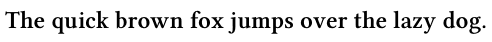

🚧 This page is currently being revised and reconstructed.
Its structure, examples, and explanations are being updated for current ConTeXt and LuaMetaTeX. Some commands and installation procedures retained from the former page are being retested with current LMTX.
Please feel free to edit, correct, test, or improve this page while the revision is in progress.
Fonts in ConTeXt · Characters, words and fonts · Fonts · Use any font you want · Font switching
Contents
-
1
Use any font you want
- 1.1 1. Check whether ConTeXt can see the font
- 1.2 2. Use a font quickly with \definedfont
- 1.3 3. Define a reusable font command
- 1.4 4. Define a document font family
- 1.5 5. Define serif, sans-serif, and monospaced families
- 1.6 6. Add a mathematics font
- 1.7 7. Add a fallback for another script
- 1.8 8. If ConTeXt cannot find the font
- 1.9 9. Fonts installed in the ConTeXt tree
- 1.10 10. System fonts and OSFONTDIR
- 1.11 11. Make a font setup reusable
- 1.12 12. Advanced: define a traditional typescript
- 1.13 13. Install a reusable typescript
- 1.14 14. Troubleshooting
- 1.15 15. A practical workflow
- 1.16 16. What belongs on another page?
- 1.17 17. Further reading
- 1.18 18. Related pages
ConTeXt can use fonts supplied with the distribution, fonts installed on your operating system, and fonts that you install specifically for use with ConTeXt.
This page is a how-to guide. It follows a practical sequence:
check whether ConTeXt sees the font
|
v
use it temporarily
|
v
define it as a document font family
|
v
add other styles or fallbacks if needed
|
v
make the setup reusable
For a general introduction to the ConTeXt font system, see Fonts.
For changing styles such as roman, italic, bold, and bold italic, see Font switching.
For multilingual documents and script-specific fallbacks, see Languages and Mixed languages.
Start with the simplest mechanism that solves the problem.
\definedfont
|
+-- quick or local use
\definefont
|
+-- reusable font command
\definefontfamily
|
+-- document font family
typescript
|
+-- advanced or reusable low-level setup
For most ordinary documents, \definefontfamily is a good starting point.
1. Check whether ConTeXt can see the font
Before changing font directories, environment variables, or caches, first ask ConTeXt whether the font is already known.
For example:
mtxrun --script fonts --list --all --pattern="libertinus"
or:
mtxrun --script fonts --list --all --pattern="noto serif"
The exact result depends on the fonts installed on your system and on the fonts available in your ConTeXt installation.
A successful search may return information such as:
identifier familyname fontname filename subfont
The names used by ConTeXt are not always identical to the filename that you see in a graphical file manager.
Do not rebuild the font database unless you need to.
If the font already appears in the output of
mtxrun --script fonts --list, you can normally proceed
directly to using it.
2. Use a font quickly with \definedfont
If you need a font only for a short passage or a quick test, use \definedfont.
For example:
-
\definedfont [name:libertinusserifsemibold*default at 12pt] \framed [frame=off, align=normal] {The quick brown fox jumps over the lazy dog.}
-

This changes the current font directly.
It is useful for:
- testing whether a font can be loaded;
- short passages in a special face;
- experiments;
- inspecting a particular weight or style.
2.1 Add OpenType features
A font specification may include a feature set.
For example:
\definedfont [name:libertinusserifsemibold*default at 12pt]
The *default feature set enables the normal OpenType features
that ConTeXt associates with ordinary text.
For more information about font features, see Fonts and the official ConTeXt font documentation.
3. Define a reusable font command
If the same font is needed repeatedly, \definefont can associate it with a command:
-
\definefont [WarningFont] [name:libertinusserifsemibold*default at 12pt] \starttext The quick brown fox jumps {\WarningFont over the lazy dog}. \stoptext
This is still a local font selection mechanism.
For the normal fonts of an entire document, use a font family instead.
4. Define a document font family
For most documents, \definefontfamily provides a convenient way to define the main fonts.
A minimal serif setup is:
-
\definefontfamily [mainface] [serif] [Libertinus Serif] \setupbodyfont [mainface,11pt] \starttext The quick brown fox jumps over the lazy dog. {\it The quick brown fox jumps over the lazy dog.} {\bf The quick brown fox jumps over the lazy dog.} {\bi The quick brown fox jumps over the lazy dog.} \stoptext
ConTeXt selects the appropriate regular, italic, bold, and bold-italic faces belonging to the family when they are available.
A font family is usually better than selecting individual files.
When ConTeXt can identify a font family correctly,
\definefontfamily lets you work with semantic alternatives such
as:
\tf regular \it italic \bf bold \bi bold italic
rather than selecting a separate font file every time.
5. Define serif, sans-serif, and monospaced families
A bodyfont environment can contain several families.
For example:
\definefontfamily [mainface] [rm] [Libertinus Serif] \definefontfamily [mainface] [ss] [Libertinus Sans] \definefontfamily [mainface] [tt] [Libertinus Mono] \setupbodyfont [mainface]
The common family identifiers are:
| Identifier | Meaning |
|---|---|
rm or serif
|
serif / roman |
ss or sans
|
sans serif |
tt or mono
|
monospaced |
The families can then be selected with the normal ConTeXt font-switching
commands.
See Font switching for the general mechanisms.
6. Add a mathematics font
Mathematics is normally configured separately from the text families.
A setup can combine \definefontfamily for text with \definetypeface for mathematics.
The former version of this page gave the following pattern:
\definefontfamily [myfonts] [rm] [My Serif Font] \definefontfamily [myfonts] [ss] [My Sans Font] \definefontfamily [myfonts] [tt] [My Mono Font] \definetypeface [myfonts] [mm] [math] [termes] \setupbodyfont [myfonts]
The text font and the mathematics font do not have to belong to the same family.
For detailed mathematics-font configuration, consult the font and mathematics documentation rather than treating math fonts as ordinary text faces.
7. Add a fallback for another script
A document font may work perfectly for Latin text while lacking Greek, Arabic, Hebrew, CJK, or another writing system.
In that case, use a font fallback rather than replacing the main font.
The general pattern is:
\definefallbackfamily [mainface] [serif] [Fallback Font] [range=...] \definefontfamily [mainface] [serif] [Main Font] \setupbodyfont [mainface]
Conceptually:
main font
|
+-- normal document text
fallback
|
+-- characters missing from the main font
A font fallback changes glyph coverage, not language or direction.
A fallback can provide characters for another script.
It does not by itself:
- change the current language;
- establish right-to-left direction;
- enable bidirectional processing;
- choose language-specific punctuation.
For those questions, see:
8. If ConTeXt cannot find the font
If a font is not returned by the font database query, investigate the problem progressively.
8.1 Check that the font is really installed
First verify that the font files are present where you expect them to be.
Fonts may come from:
- the operating system;
- the ConTeXt distribution;
- a local ConTeXt font tree;
- another directory explicitly made visible to ConTeXt.
For sources of freely available fonts, see:
8.2 Refresh the ConTeXt databases
When new font files have been added and ConTeXt does not yet see them, regenerate the file database and reload the font database:
mtxrun --generate mtxrun --script fonts --reload
Then search again:
mtxrun --script fonts --list --all --pattern="font name"
The exact spelling of the family or identifier may differ from the font filename.
8.3 Clear the cache only when necessary
If a font has been replaced, moved, or remains incorrectly indexed, it may be useful to erase the cache and regenerate the databases:
mtxrun --script cache --erase mtxrun --generate mtxrun --script fonts --reload
This is a troubleshooting step, not something that normally needs to be run before every use of a font.
9. Fonts installed in the ConTeXt tree
Fonts intended specifically for a ConTeXt installation can be stored in the font tree.
A traditional location is below:
tex/texmf-fonts/fonts/
For a larger collection, following the TeX Directory Structure makes the tree easier to maintain.
For example:
tex/texmf-fonts/fonts/truetype/vendor/fontfamily/
After adding files to such a tree, regenerate the file and font databases if necessary:
mtxrun --generate mtxrun --script fonts --reload
10. System fonts and OSFONTDIR
ConTeXt can also use fonts installed by the operating system.
Recent ConTeXt installations can discover the standard font directories automatically on common systems. Therefore, first check whether the font is already visible with:
mtxrun --script fonts --list --all --pattern="font name"
Only investigate OSFONTDIR when ConTeXt does not see fonts that
should otherwise be available.
10.1 Explicit OSFONTDIR configuration
An explicit font search path can be supplied through the
OSFONTDIR environment variable.
Examples traditionally used on this page include:
Windows
set OSFONTDIR=c:/windows/fonts/
macOS
export OSFONTDIR=/Library/Fonts/:/System/Library/Fonts:$HOME/Library/Fonts
GNU/Linux
export OSFONTDIR=$HOME/.fonts:/usr/share/fonts
The actual font directories depend on the operating system and on how the fonts were installed.
If an explicit setting is needed permanently, place it in the appropriate shell or environment configuration.
Do not set OSFONTDIR merely because an old example does so.
First determine whether current ConTeXt already sees the font.
Manual search-path configuration is mainly useful for non-standard font locations or troubleshooting.
11. Make a font setup reusable
If several documents use the same fonts, avoid repeating a long font setup in every source file.
Possible approaches include:
- placing the font definitions in a shared environment;
- placing them in a project-level environment;
- defining a reusable typescript when lower-level control is required.
For project organization, see the relevant pages on projects, products, components, and environments.
12. Advanced: define a traditional typescript
Typescripts provide lower-level and reusable font definitions.
They remain useful when:
- an existing font setup already uses typescripts;
- exact font files must be mapped explicitly;
- automatic family recognition is insufficient;
- a reusable low-level definition is required.
For many ordinary documents, however, \definefontfamily is simpler.
12.1 Map font files to symbolic names
The older Noto Serif example used four font files:
\starttypescript [mynotoserif] \definefontsynonym [NotoSerif-Regular] [file:NotoSerif-Regular] \definefontsynonym [NotoSerif-Italic] [file:NotoSerif-Italic] \definefontsynonym [NotoSerif-Bold] [file:NotoSerif-Bold] \definefontsynonym [NotoSerif-BoldItalic] [file:NotoSerif-BoldItalic] \stoptypescript
12.2 Map the symbolic names to ConTeXt alternatives
The next layer associates the files with the standard serif alternatives:
\starttypescript [mynotoserif] \setups[font:fallback:serif] \definefontsynonym [Serif] [NotoSerif-Regular] [features=default] \definefontsynonym [SerifItalic] [NotoSerif-Italic] [features=default] \definefontsynonym [SerifBold] [NotoSerif-Bold] [features=default] \definefontsynonym [SerifBoldItalic] [NotoSerif-BoldItalic] [features=default] \stoptypescript
12.3 Define the typeface
Finally:
\starttypescript [mynotoserif] \definetypeface [mynotoserif] [rm] [serif] [mynotoserif] [default] \stoptypescript
The typeface can then be selected with:
\setupbodyfont [mynotoserif]
Why is this more complicated than \definefontfamily?
A traditional typescript exposes the mappings between:
font files
↓
symbolic font names
↓
Serif / SerifItalic / SerifBold / SerifBoldItalic
↓
typeface
This is useful when that level of control is required.
For ordinary family selection, \definefontfamily can usually
perform much of this work automatically.
13. Install a reusable typescript
A reusable typescript should be stored in a file that ConTeXt can locate.
For LMTX, the conventional filename uses the
type-imp- prefix, for example:
type-imp-mynotoserif.mkxl
or another supported ConTeXt source extension.
A local typescript can be placed in an appropriate user tree, for example below:
tex/texmf-fonts/tex/context/user/
After adding a new file to the tree, regenerate the file database when necessary:
mtxrun --generate
The typescript can then be loaded with:
\usetypescriptfile [mynotoserif] \setupbodyfont [mynotoserif]
The filename convention and search path should be checked when moving a typescript between older MkIV installations and current LMTX systems.
14. Troubleshooting
| Symptom | First thing to investigate |
|---|---|
| font is installed but ConTeXt does not list it | font database and installation path |
| font search returns no result | spelling of the family name or identifier |
| new font files were just added | run mtxrun --generate and reload the font database
|
| ConTeXt keeps using an old version of a font | font cache |
| regular font works but italic or bold does not | family recognition and available font styles |
| only some characters are missing | glyph coverage and font fallbacks |
| Greek, Arabic, Hebrew, or CJK characters are missing | script coverage and fallback |
| Arabic characters appear but run in the wrong direction | RTL/BiDi setup, not merely font selection |
| a system font is not visible | system font location and, if necessary, OSFONTDIR
|
| typescript file is not found | filename, type-imp- convention, search path, and file database
|
15. A practical workflow
When using a new font, proceed from the simplest question to the more specialized ones:
Is the font installed?
|
v
Can ConTeXt see it?
|
v
Can \definedfont load it?
|
v
Can \definefontfamily identify the family?
|
v
Do regular / italic / bold / bold italic work?
|
v
Are fallbacks needed?
|
v
Does the setup need to be shared?
|
v
Only then consider a custom typescript
This approach keeps font discovery, font selection, script coverage, and reusable configuration separate.
16. What belongs on another page?
| Question | Page |
|---|---|
| How does the ConTeXt font system work in general? | Fonts |
| How do I switch between roman, italic, bold, and other styles? | Font switching |
| Which fonts are distributed with ConTeXt? | ConTeXt distribution's Fonts |
| Where can I find free fonts? | Available Free Fonts |
| Are there existing font installation or typescript examples? | Examples of font installation and typescripts |
| How do language, script, and font differ? | Languages |
| How do I use several scripts in one document? | Mixed languages |
| How do I handle Arabic or Hebrew direction? | Right-to-left and BiDi |
17. Further reading
- Fonts ;
- Font switching ;
- Available Free Fonts ;
- Examples of font installation and typescripts ;
- ConTeXt distribution's Fonts ;
- Languages ;
- Mixed languages ;
- Fonts in ConTeXt — official PRAGMA documentation;
- TeX Directory Structure .
18. Related pages
- Characters, words and fonts
- Fonts
- Font switching
- Available Free Fonts
- Examples of font installation and typescripts
- ConTeXt distribution's Fonts
- Languages
- Mixed languages
- Right-to-left and BiDi
Fonts in ConTeXt · Characters, words and fonts · Fonts · Use any font you want · Font switching